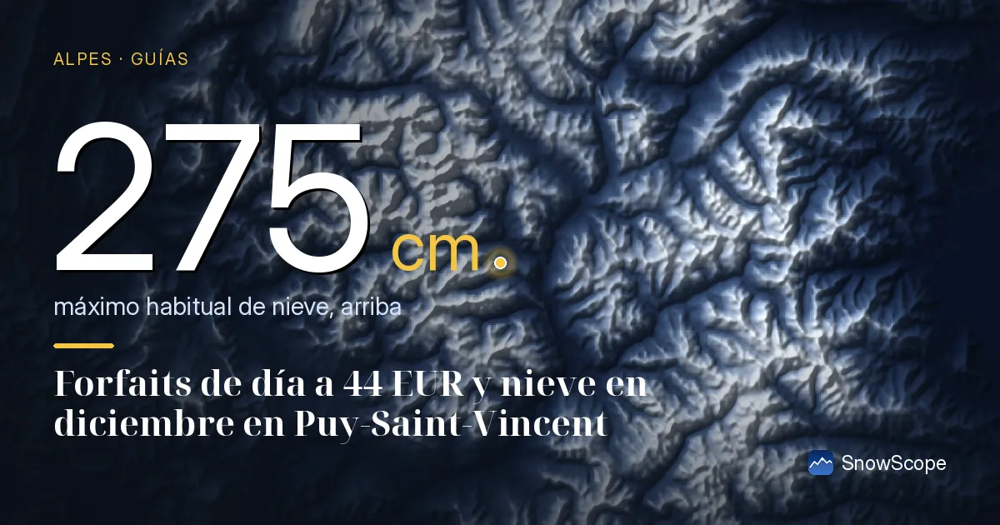

Forfaits de día a 44 EUR y nieve en diciembre en Puy-Saint-Vincent
Un forfait de adulto de 1 día por 44 EUR hace de Puy-Saint-Vincent una opción económica para esquiar en diciembre en los Écrins. Aunque la base a 1411 m suele ser escasa a principios de invierno, nuestro historial de nieve muestra una capa fiable a partir de media montaña. Aquí tienes cómo se compara con Serre Chevalier.
Consulta la previsión de nieve en tiempo real de Puy-Saint-Vincent en la app SnowScopeEspesor de nieve, alertas de nieve polvo y mapa 3D, gratis.
Un forfait de 44 EUR en una montaña compacta
Para el invierno 2026-27, la web oficial de Puy-Saint-Vincent fija el precio del forfait de adulto de 1 día en 44 EUR. Esto cubre un dominio esquiable de 42 km de pistas y 12 remontes, que van desde los 1411 m hasta los 2664 m, con un desnivel de 1253 m.
Un mapa compacto hace que un viaje corto en diciembre sea sencillo y asequible. La verdadera pregunta es cómo se mantiene la nieve natural a cada altura antes de enero.

Tres alturas, tres historias de nieve en diciembre
En la base de los remontes (1411 m), la nieve en diciembre es claramente escasa. En nuestro historial de nieve de 46 inviernos pasados (de 1980-81 a 2025-26), el espesor habitual en diciembre es de 19 cm, cayendo por debajo de 5 cm en 1 de cada 10 inviernos y superando los 39 cm en 1 de cada 10.
Más arriba, la capa de nieve aumenta rápidamente. En media montaña (2037 m) el promedio es de 55 cm en un diciembre habitual, con 1 invierno de cada 10 por debajo de 21 cm y 1 de cada 10 por encima de 96 cm. En la cima (2664 m), un diciembre habitual alcanza los 106 cm (44 cm en el caso de poca nieve, 185 cm en el de mucha).
Qué semanas de diciembre mantienen mejor la nieve
Las cifras semana a semana muestran cuándo reservar. En la base (1411 m), se alcanzan 30 cm o más en el 15 % de los inviernos pasados entre el 1 y el 7 de diciembre, el 20 % del 8 al 14, el 28 % del 15 al 21 y el 33 % del 22 al 28 de diciembre, mientras que 50 cm o más aparecen solo en el 0 %, 2 %, 7 % y 9 %.
En media montaña (2037 m), se mantienen 30 cm o más en el 61 % de los inviernos pasados entre el 1 y el 7 de diciembre, aumentando al 76 %, 89 % y 93 % en las tres semanas siguientes, mientras que 50 cm o más suben del 35 % y 46 % al 54 % del 15 al 21 de diciembre y al 70 % del 22 al 28 de diciembre. En la cima (2664 m), 30 cm o más se alcanza el 98 % entre el 1 y el 7 de diciembre y el 100 % después, con 50 cm o más en el 74 %, 85 %, 93 % y 96 %.
Frente a su gran vecino Serre Chevalier
Serre Chevalier es mucho más grande, con 157 km de pistas y 70 remontes desde los 1219 m hasta los 2765 m (un desnivel de 1546 m). Su web oficial lista un forfait de adulto de 6 días a 276,00 EUR desde la apertura hasta el 18 de diciembre de 2026 y 345,00 EUR del 19 de diciembre de 2026 al 1 de enero de 2027. Puy-Saint-Vincent solo tiene el forfait de 1 día a 44 EUR, ideal para viajes más cortos.
En nuestro historial de nieve, Serre Chevalier tiene más espesor en la base (1219 m), con una media de 30 cm en un diciembre habitual (8 cm en el caso de poca nieve, 59 cm en el de mucha) con 30 cm o más en el 30 %, 41 %, 52 % y 67 % de los inviernos. Más arriba, ambos están cerca: Serre Chevalier promedia 58 cm en media montaña (1992 m; 24 cm en el caso de poca nieve, 103 cm en el de mucha) y 111 cm en la cima (2765 m; 50 cm en el caso de poca nieve, 192 cm en el de mucha), alcanzando 30 cm o más en el 65 %, 83 %, 93 % y 96 % de los inviernos en media montaña y 50 cm o más en el 78 %, 87 %, 96 % y 96 % en la cima.
Primeras nieves, tendencias largas y señales tempranas
El invierno pasado (2025-26) tuvo un promedio de diciembre modesto en Puy-Saint-Vincent: 12 cm en la base, 42 cm en media montaña y 91 cm en la cima. La primera nieve duradera suele llegar el 30 de octubre a la base, el 26 de octubre a media montaña y el 13 de octubre a la cima. Comparando los primeros 15 inviernos (1980-81 a 1994-95) con los últimos 15 (2011-12 a 2025-26), los promedios de diciembre subieron de 13 cm a 23 cm en la base, de 42 cm a 60 cm en media montaña y de 87 cm a 114 cm en la cima. Los extremos de poca nieve llegaron a 0 cm en la base en 1998-99 (13 cm en media montaña, 38 cm en la cima en 2015-16), mientras que 1996-97 alcanzó 52 cm, 114 cm y 199 cm.
Como señal de cómo empieza esta temporada, la estimación de nieve de hoy, 13 de noviembre de 2026, se sitúa en 0 cm en la base y media montaña y 11 cm en la cima, con una previsión de 0 cm, 37 cm y 70 cm de nieve nueva para los próximos siete días. Para el periodo del 13 al 26 de noviembre de 2026, las perspectivas para dos semanas en media montaña y superior dan un rango de pronóstico de 69 cm a 108 cm (89 cm de media).
Consejos para esquiadores
- Apunta a las fechas del 15 al 21 de diciembre o del 22 al 28 de diciembre, cuando la probabilidad de tener 50 cm o más en media montaña (2037 m) sube al 54 % y 70 % de los inviernos pasados.
- Esquía principalmente entre media montaña (2037 m) y la cima (2664 m), ya que la base a 1411 m tiene una media de 19 cm.
- Consulta el boletín de aludes antes de salirte de pista, especialmente en las zonas altas donde la nieve habitual en diciembre alcanza los 106 cm.
- Reserva el forfait de 1 día por 44 EUR en la web oficial de Puy-Saint-Vincent, o compara con el forfait de 6 días de principios de diciembre en Serre Chevalier por 276,00 EUR.
Más mapas (sitios externos)
Referencias y créditos
- Puy-Saint-Vincent, official ski pass prices 2026-27 www.puysaintvincent.com/forfait-ski-puy-saint-vincent
- Serre Chevalier, official booking site, ski passes 2026-27 reservation.serre-chevalier.com/achetez-vos-ski-pass-serre-chevalier-et-autres-prestations.html
- SnowScope, December snow at three heights and today's snow map snowscope.app/
Sobre estas cifras
Cifras de nieve: histórico de nieve de SnowScope, 46 inviernos pasados (1980-81 a 2025-26) a tres alturas de cada estación (un modelo del pasado corregido por altitud: una estimación para una zona, no mediciones de la estación); cifras de diciembre calculadas con los espesores diarios de esos inviernos. Nieve actual y tendencia a dos semanas: previsiones de SnowScope (tendencia de ECMWF y GFS, un rango, no una promesa). Remontes y pistas: cartografía de OpenSkiMap. Precios: las páginas oficiales de abajo, consultadas el 2026-11-13; los precios pueden cambiar, compruébalos antes de reservar.
Boletines oficiales de aludes: Météo-France – Bulletin d'estimation du risque d'avalanche
Citar este informe
Para investigación, docencia o prensa: cifras y gráficos reutilizables libremente bajo CC BY 4.0 con esta cita.
SnowScope (2026), Forfaits de día a 44 EUR y nieve en diciembre en Puy-Saint-Vincent, https://snowscope.app/blog/es/2026/11/puy-saint-vincent-december-ski-cheap-pass-snow-2026.html, consultado el 2026-11-14
SnowScope (Atlas Labs). (2026, November 14). Forfaits de día a 44 EUR y nieve en diciembre en Puy-Saint-Vincent. SnowScope snow reports. https://snowscope.app/blog/es/2026/11/puy-saint-vincent-december-ski-cheap-pass-snow-2026.html
BibTeX
@misc{snowscope2026puysaintvincentdecembers,
author = {{SnowScope (Atlas Labs)}},
title = {Forfaits de día a 44 EUR y nieve en diciembre en Puy-Saint-Vincent},
year = {2026},
month = nov,
howpublished = {\url{https://snowscope.app/blog/es/2026/11/puy-saint-vincent-december-ski-cheap-pass-snow-2026.html}},
note = {Published 2026-11-14 14:11 UTC; accessed 2026-11-14}
}· CC BY 4.0 · Métodos, datos y herramientas →
Puy-Saint-Vincent: nieve y temperatura según la altura, este invierno vs el pasado (herramientas) →
Sigue Puy-Saint-Vincent
Gratis: un aviso cuando llega la nieve y la previsión cada mañana.